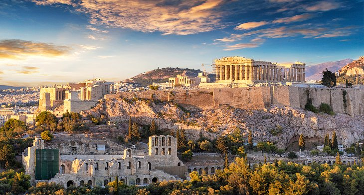
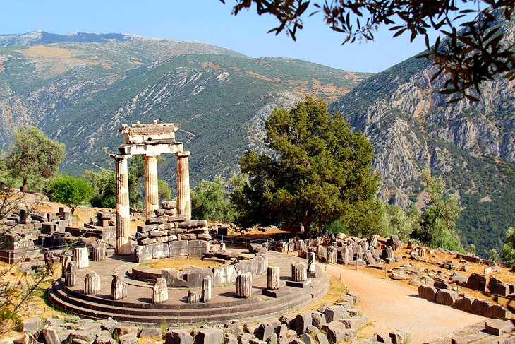

Santornini Island

Santorini Island is so spectacularly photogenic that even beginning photographers can capture
stunning images. In the charming village of Oia, cobalt-domed churches and whitewashed houses stand on slopes of the volcanic
island's caldera, which plunge into the mesmerizing deep blue waters of the Aegean Sea. Oia village is also famous for its
beautiful sunsets.
Athens Acropolis

The Acropolis in Athens casts a spell of enchantment over modern-day viewers; its colossal ruins
evoke the glory of ancient civilization. Perched at the summit of the Acropolis hilltop, the Parthenon is a magnificent
classical-era temple that was the most sacred site of Greece in the 4th-century BC. A good vantage point for taking panoramic
photos is from Philopappou Hill, directly across from the Acropolis.
Delphi Archaeological Site

The archaeological site of Delphi stands on the slopes of Mount Parnassus overlooking a valley
filled with olive groves. Delphi is designated as a UNESCO World Heritage site because of the importance of its 4th-century
BC pan-Hellenic sanctuaries. With vistas of mountains in the background, the ruins of the Temple of Athena look especially
splendid in photos.